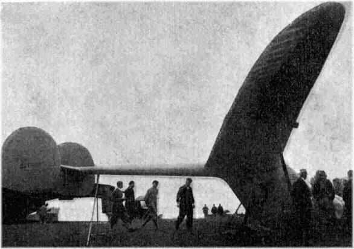
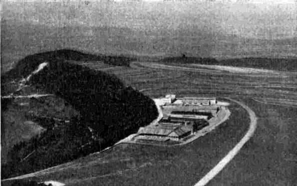

|
Inicio
Bibliografía
Noticias
Hangar
Actividades
Cursos
Comisión
Fotos
Videos
Ubicación
Contáctenos
Links
|
|
Manual del Vuelo a Vela
Wolf Hirth - 1942
HISTORIA DEL VUELO A VELA
por GEORG BRÜTTING
4º Sección
Pero en este concurso de 1932 ocurrió algo que será siempre de triste recuerdo: continuamente
crecientes iban siendo las marcas obtenidas en el concurso que, como todos, desde los
primeros años de su fundación, iba transcurriendo con felicidad, cuando inesperadamente
hubo una víctima que ofreció su joven vida en el lugar mismo donde tanta fama había
conquistado. Günther Groenhoff, en el sombrío y aciago día 23 de julio, consiguió
engancharse a un frente tormentoso; en el envuelo se estropeó el timón de altura y a 30
m. sobre el bosque falló el recurso del paracaídas... Günther Groenhoff había
muerto... El día anterior apenas había podido escapar Kronfeld de un gran peligro,
salvándose en paracaídas, lanzándose de su "Austria", que caía desbocado; su "Austria" que con sus 30 m. de envergadura representaba el mayor velero construido hasta
hoy (fig. 7).

Fig. 7. El "Austria de Kronfeld", proyecto del doctor Kupper (1930), fue el mayor velero del mundo con sus 30 m. de envergadura.
Se destruyó durante un vuelo en nube, en 1932.
Otra vez daba que hablar, en el concurso del año siguiente, un piloto no alemán. El 13 de febrero
de 1933, el piloto suizo Farner voló remolcado por primera vez sobre los Alpes y sin
grandes dificultades aterrizó en Milán. Pero en el vuelo de regreso los dos pilotos, el
remolcador y el remolcado, hubieron de luchar con las alevosías del mundo alpino y sus
corrientes de aire: luego de un aterrizaje forzado en Bellinzona, pudieron los dos pilotos
terminar felizmente su vuelo hasta Arosa.
Hazaña parecida, pero de mayores proporciones, había
llevado a cabo en vuelo remolcado en abril de 1930, el americano Frank Hawks, el cual en
ocho días y veinte etapas ejecutó la travesía transcontinental de América, volando de
San Diego a Nueva York, con cerca de 4000 km.; Hawks empleó para ello el « Eaglet », de
Franklin, un monoplano de ala alta atirantada, de 13 m. de envergadura y 6,3 m. de
longitud. Llegó a Nueva York ligeramente escorado, a consecuencia de la tracción algo
oblicua, así que en las últimas etapas Hawks se vio obligado a volar empleando
continuamente el mando de alabeo.
En Alemania, al subir al poder el Nacionalsocialismo, tuvo
también efecto una transformación fundamental del vuelo sin motor. La reunión de todos
los deportes aéreos había ya dado lugar a la Unión alemana del deporte aéreo y en 1937
salió de ella el Cuerpo de Aviadores del N. S., el cual intensificó la propaganda para
llegar a conseguir el mayor número posible de pilotos de velero idóneos. El concurso de
1933 bajo el patronato de la Unión alemana del deporte aéreo fue designado por primera
vez con el calificativo de "nacional". Durante la celebración de este concurso llegó
la noticia de una fantástica marca mundial de un piloto alemán de velero hasta entonces
completamente desconocido: Kurt Schmidt, de Königsberg, despegó el 3 de agosto poco
después de las siete de la mañana en su "Grunau Baby" desde la ladera de
Korschenruhe y estuvo haciendo ochos hasta el anochecer del día siguiente, en el que,
poco después de las ocho de la tarde, hizo la señal de aterrizar: 36 horas y 35 minutos
hablan transcurrido cuando Schmidt hacía posar, incólume, su «Baby» en tierra, en el
lugar en que mientras tanto se hablan reunido numerosos espectadores, que con gran júbilo
celebraron una marca que podía ser tenida por increíble.
En el concurso hubo también una nueva marca de duración
del Rhön, conseguida por el piloto wurtembergués Hakenjos, que la elevó a 13 horas y 30
minutos, y otra vez alcanzó Wolf Hirth el premio de distancia con 176 km. hasta Zwickau,
delante de Peter Riedel, que sólo llegó a los 164 km., asegurando también el premio de
objetivo a distancia, cuyas condiciones había llenado ya el primer día Heini Dittmar.
Después del concurso se obtuvo una tercera marca de
duración: Hanna Reistch mejoró la marca femenina de Rossitten, llevándola a 10 horas.
El año 1934 los pilotos de veleros alemanes aceptaron una
invitación de Sudamérica, en donde Wolf Hirth, Peter Riedel, Heini Dittmar y Hanna
Reistch debían experimentar, bajo la dirección del profesor Georgii, las posibilidades
de vuelo a vela en las zonas tropicales. Además de muchos vuelos de distancia, la
expedición tuvo su culminación deportiva en las nuevas marcas mundiales conseguidas,
tanto de pilotos masculinos como femeninos: en 17 de febrero, volando en tres pisos
sucesivos de cúmulos, Heini Dittmar conseguía los 4000 m. sobre el punto de salida y
Hanna Reitsch girando en un "Baby" en la primera nube ganaba altura y llevaba a 2200 m.
su segunda marca femenina, a la que añadió, después de su regreso a Alemania, la
tercera marca consiguiendo la de distancia: partiendo de Griesheim (Aeródromo afecto al
Instituto de vuelo sin motor de Darmstad. N. del T.) en
un "Fafnir" pasaba sobre Würtemberg y aterrizaba en Reutlingen, cubriendo los 162 km.
Erich Wiegmayer; como Hanna Reitsch, piloto de experimentación en Griesheim, hizo por
este tiempo el primer envuelo, realizado en Alemania, partiendo de un dirigible, que Ralph
Barnaby ya había realizado con éxito en América.
En el concurso del Rhön hizo su aparición el primer día
Ludwig Hofmann, que ya en la primavera había conseguido resultados de la importancia que
supone salir de Hormisgrinde, en la Selva Negra y, entre otros grandes vuelos, haber hecho
el de llegar a Francia y el de 225 km. a Nuremberg: a la apertura del concurso del Rhön
empezó haciendo 115 km., resultado que obtuvo varias veces, llegando a sumar sus vuelos
1180 km., siendo el vencedor en recorrido total, 2º premio en altura y 4º en distancia,
resultando proclamado vencedor del concurso; su mayor marca de distancia ascendió a 310
km., mientras que, en igual día, Wolf Hirth, no solamente era el vencedor de la carrera
de la distancia mínima de 300 km. con los 352 km. hasta Görlitz en Silesia, sino que
conseguía la marca mundial, que solamente pudo disfrutar
veinticuatro horas de su vida, pues al día siguiente, 27 de julio, alcanzaba Wiegmayer
315 km. y aterrizaba, como Hofmann, en Checoslovaquia, y Heini Dittmar envolaba, por
primera vez, en el Fafnir II «Sao Paulo », aterrizando después de cinco horas de vuelo
en Liban, igualmente en Checoslovaquia, a 375 km. de la Wasserkuppe.
El carácter de obtención de marcas del 15 Concurso fue completado con la
ejecución de los vuelos de objetivo fijado al
Oechsen y regreso a la Wasserkuppe, llevados a cabo por Wolf Hirth y el berlinés Philipp,
así como por los vuelos combinados realizados por primera vez, alcanzando la marca de
conjuntos de tres veleros, en los cuales Heini Dittmar, Peter Riedel y Hanna Reitsch
reunieron, entre los tres, 581 km. El año 1934 cerró el vuelo a vela con la expedición
realizada a Finlandia por Hanna Reitsch, Philipp, de Berlín y Utech, de Darmstadt, bajo
la dirección del conde Ysenburg.
Quien haya seguido constantemente y al detalle la historia
del vuelo sin motor se habrá sorprendido de la increíble importancia de las marcas de
distancia obtenidas el año 1934, que fue coronado por los cuatro vuelos de más de 300
km. realizados en el concurso de ese año. En 1931 llevaba Günther Groenhoff la marca de
distancia obtenida con vuelo sin motor a los 272 km., y tres años se esforzaron en vano
para rebasarla los más hábiles pilotos alemanes, no siéndoles posible ni siquiera
aproximarse a ella. En el concurso de 1934, la marca de Groenhoff es superada cuatro veces
en dos días y por Heini Dittmar en más de 100 km. ¿ Casualidad? ¡ No! El vuelo de
Groenhoff fue un vuelo típico de frente tormentoso y los frentes tormentosos sólo son
fenómenos puramente casuales durante un concurso. Y más todavía: si la marca de
Groenhoff había de ser rebasada con otro vuelo de esa clase, la tormenta debía
presentarse oportunamente, poco antes del mediodía, y eso es aún más raro que suceda.
En cambio; los éxitos de 1934 fueron solamente debidos a la combinación de buenas
ascendencias térmicas con vientos violentos simultáneos, es decir, al llamado "viento
térmico".
Se designa con el nombre de viento térmico a la
combinación de enérgicas ascendencias térmicas con grandes velocidades horizontales,
que proporcionan al velero gran velocidad de avance y le dan la posibilidad de cubrir, en
poco tiempo, grandes distancias. El estudio científico de los vuelos de más de 300 km.
de ese año demostró que fueron posibles por las grandes cantidades de energía puestas
en acción y que no eran originadas en Europa, sino transportadas hasta aquí desde las
latitudes meridionales de los trópicos. La consecuencia inmediata de este estudio era del
mayor alcance, pues se pudo ver que en los vuelos de los años anteriores nunca habían
sido utilizadas circunstancias parecidas y que con esta conquista meteorológica
resultaban ensanchados en enormes proporciones los límites de posibilidades del vuelo sin
motor. El viento térmico fue así calificado como la condición más favorable para
obtener grandes marcas de vuelo a vela: la prueba de esta afirmación la trajo el año
1935, un año todavía más importante en obtención de marcas.
El mismo profesor Georgii dice: "El que el vuelo a vela
se haya desligado de los frentes tormentosos para poder alcanzar grandes distancias, ¡no
es un inconveniente!"
El año 1935, como los 1922 y 1931, será por siempre mirado como un año culminante en el
progreso del vuelo sin motor.
Ludwig Hofmann abrió el año de los vuelos de distancia
con un vuelo de 140 km. desde Darmstadt a la frontera luxemburguesa en el velero de nueva
construcción "Rhönsperber"; cuando la liberación del Sarre, voló Fischer, de
Darmstadt, en su "Windspiel", igualmente desde esa ciudad hasta Saarbrücken, llevando
al país del Sarre el saludo del vuelo sin motor alemán, aterrizando en el propio
aeródromo de Saarbrücken, realizando un vuelo de objetivo fijado. Igualmente, en vuelo
de objetivo fijado, salía Hofmann de Hornberg y llegaba a Friedrichshafen con 100 km. de
recorrido, y dos días después anunciaba que, también con objetivo propuesto, volaba 180
km. desde el aeródromo de Zurich a su punto de partida en Hornberg (fig. 8).
Mientras tanto, se tuvo noticia de dos grandes vuelos de
distancia fuera de Alemania: con puro apoyo orográfico conseguía Barringer, en
Norteamérica, una nueva marca americana de 258 km., y el húngaro Rotter cubría los 265
km. con otra marca de su país.
Y todavía debía llamar la atención general el vuelo sin
motor, antes del concurso del Rhön: el piloto de la Lufthansa, Peter Riedel, envolaba por
remolque del aeropuerto de Tempelhof, se soltaba y aterrizaba, después de un vuelo de
cinco horas, en el aeropuerto de Hamburgo, mejorando así la marca de vuelo con objetivo
fijado, llevándola a 270 km.

Fig. 8. El Hornberg, con su escuela de vuelo a vela de marca, en el año 1933.
En él se han ampliado y mejorado mucho las construcciones y el campo de vuelos.
Fotografía aérea núm. 24596, propiedad de "Luftverkehr Strähle" del Campo
de Aviación de Schorndorf (Stuttgart),
autorizada por el Ministerio de Navegación aérea del Reich
Sin embargo, lo que el 16 Concurso del Rhön mostró como fruto sazonado fue algo que excedió
a las más atrevidas esperanzas: ya al principio se superaron los 400 km. en vuelo sin
motor, llegando casi a conseguirse los 500 km., los cuales una semana después eran
alcanzados por cuatro pilotos. Ya no eran resultados aislados los vuelos de distancia del
Rhön, sino que estaban al alcance de muchos pilotos, habiéndolos que durante mucho
tiempo no se habían distinguido en el vuelo sin motor hasta que los dio a conocer la
expansión de la enseñanza en los últimos años; 61 veleros hicieron 513 envuelos de
viajes, que sumaron 35 000 km.; entre ellos: 140 vuelos de 60 km.; 113 vuelos de 100 km.;
30 vuelos de 150 km.; 41 vuelos de 200 km.; 6 vuelos de 250 kilómetros; 16 vuelos de 300
km., que era la marca mundial de años anteriores; 9 vuelos de, por primera vez, 400 km.,
y, finalmente, 4 vuelos de marca mundial con 504 km. hasta el aeropuerto de Brünn, en
Checoslovaquia. A pesar de las difíciles condiciones del concurso, la marca de duración
llegaba a las diez horas y media, y la mayor altura la registró Schilling, de Darmstadt,
que obtuvo los 2700 m.; finalmente, Oechsen, en este año, fue alcanzado, para regresar,
nada menos que cinco veces. El trabajo realizado por los conductores de los camiones en
los viajes de regreso de los veleros, en servicio continuo, día y noche, alcanza los 110
000 km. De la enorme cifra de estos vuelos sólo pueden citarse unos pocos que se
destaquen de manera especial.
Entre los vuelos de 200 km. merece especial mención el
del nuremburgués Döbler, el cual, con sus cuarenta y dos años, era el participante más
viejo del concurso y, con su "Rhönadler", no tenía ciertamente el velero de tipo
más moderno: "Bad Kissingen" aparecía ya en 1932, como también "Cäpt'n".
A pesar de ello, consiguió Döbler 240 km. en un día de viento flojo, pero rico en
térmicas, llegando hasta el Sonnenberg, cerca de Büchenbronn, en Baden, siendo el mejor
recorrido del día, después de los 260 km. que alcanzó Peter Riedel en "La Falda".
Grandioso fue el vuelo con objetivo, del que luego resultó vencedor Späte, llegando a
Chemnitz; Späte anunció un día en su patria chica que iba a llegar en velero y, en
efecto, cuatro horas más tarde llamaba desde el aeropuerto de Chemnitz, a 215 km. de
distancia del punto de partida.
|